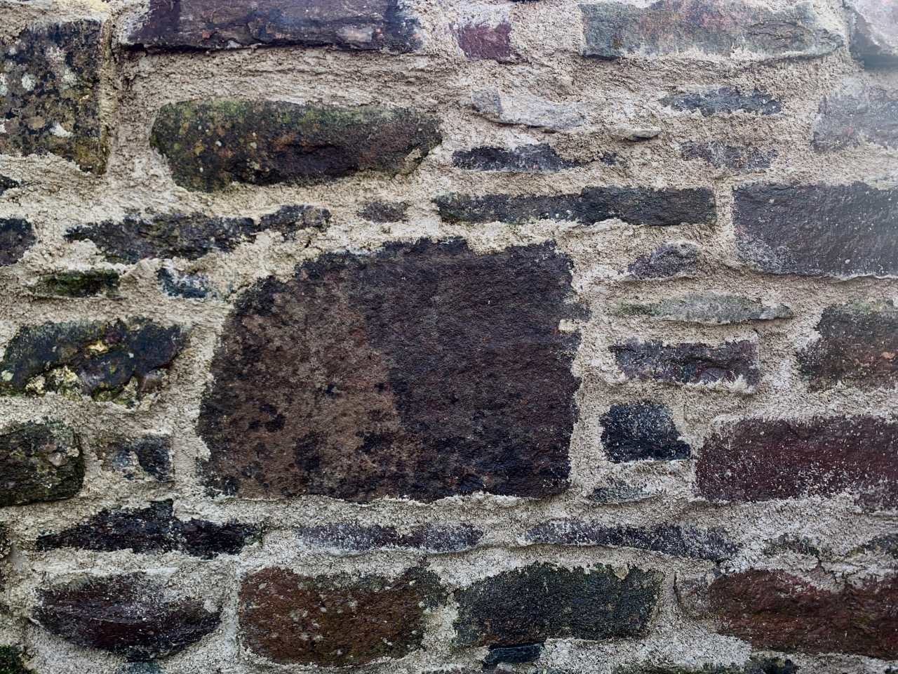
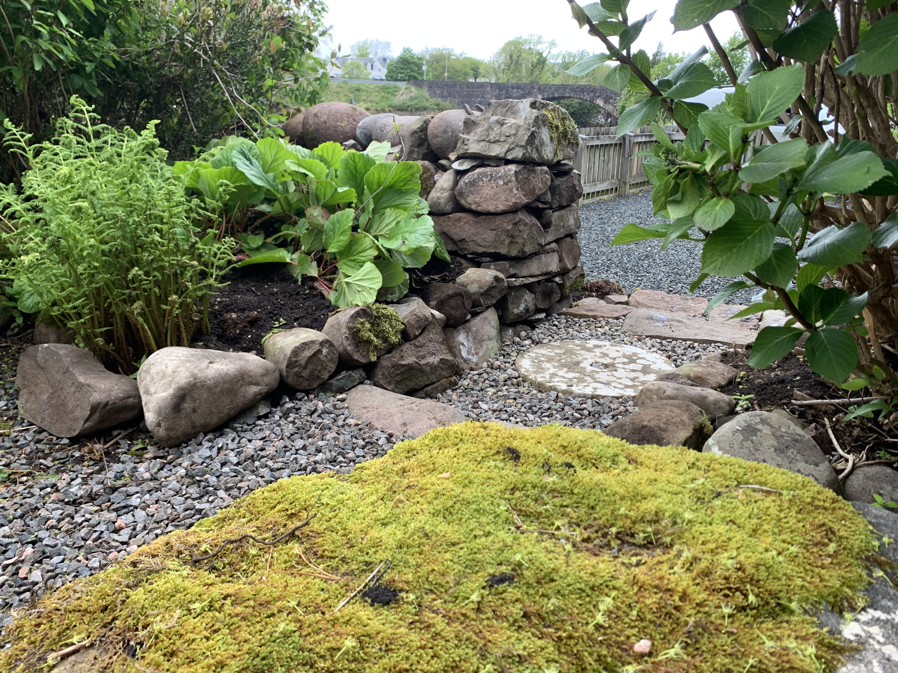
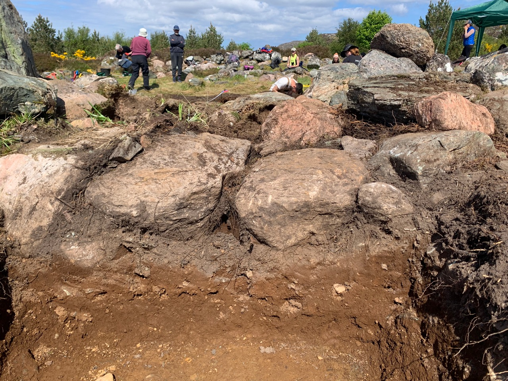

Services
Dry Stone Wall Repairs
Whether its a few loose stones or a total collapse, a small hole or a century or more of slow decline a core part of the business is repairing dry stone structures. See the before & after page for an indication of what can be done.


Lime Mortar - repairs and pointing
While not the main focus of the business I am happy to work with mortar when required. Collaborations with other builders welcome. I prefer to work with lime - but this work is limited to May-Sept.

Landscaping
Largely a by-product of the kind of site preparation and finishing I do for new build projects, various (smaller scale) landscaping services are available: stone paths, steps, defining transitions from one area to another with stone.

News
Gairloch Museum Roundhouse
I will be doing the stonework for Gairloch Museum on their forthcoming roundhouse project. A team of craftspeople will build a recreation of a roundhouse based on archaeological work done on roundhouse sites around Gairloch. The build will commence in early spring 2027. More on Gairloch roundhouses here
